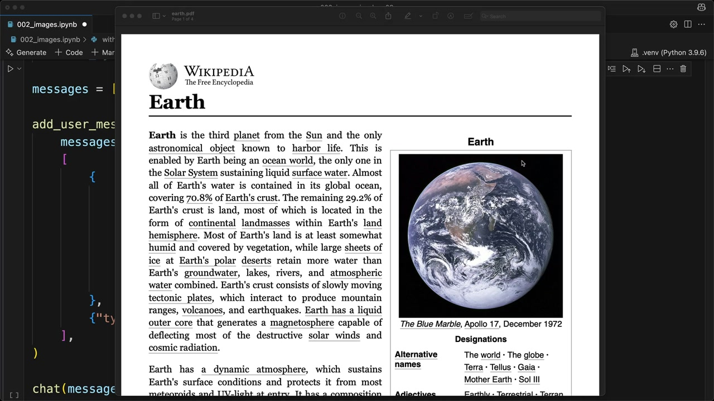
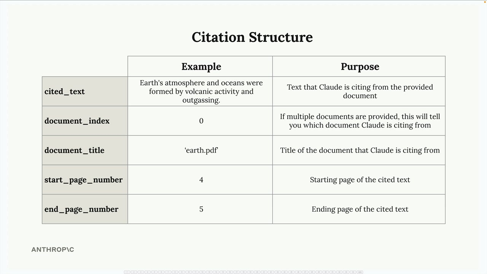
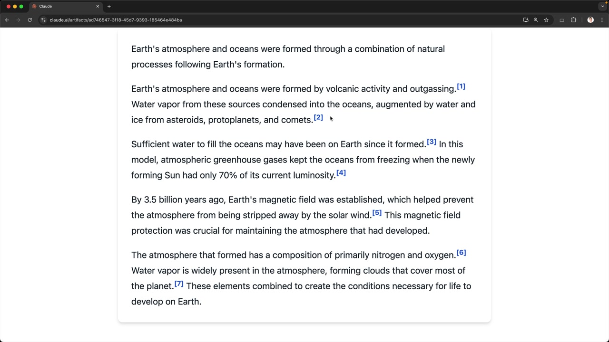

Цитаты
Чему научитесь
Видео 5:19 и текст урока
К концу урока вы сможете:
- включить цитаты для документа;
- разобрать поля цитаты в ответе;
- использовать цитаты с PDF и с обычным текстом.
Видео и текст урока.
Смотреть урок на Skilljar Citations · 5:19Когда Claude отвечает на вопросы по документам, которые вы передали, пользователи могут подумать, что он просто берёт ответ из своих обучающих данных. А что если Claude покажет, где именно нашёл каждую часть информации? Для этого и нужны цитаты (citations) — возможность ссылаться на конкретные места исходных документов и показывать пользователю, откуда взят каждый фрагмент информации.
Зачем нужны цитаты
Представьте, что вы спрашиваете Claude, как сформировалась атмосфера Земли, и получаете подробный ответ. Без цитат пользователь не может проверить информацию или понять, что Claude ссылается на конкретный документ, который вы передали. Цитаты решают проблему прозрачности: появляется ясная связь между ответом Claude и исходным материалом.

earth.pdf — статья Википедии о Земле.Как включить цитаты
Чтобы включить цитаты, измените структуру блока документа — добавьте два новых поля:
{
"type": "document",
"source": {
"type": "base64",
"media_type": "application/pdf",
"data": file_bytes,
},
"title": "earth.pdf",
"citations": { "enabled": True }
}
Поле title даёт документу читаемое имя, а citations: {"enabled": True} просит Claude отслеживать, где он находит информацию.
Структура цитаты
С включёнными цитатами ответ Claude становится сложнее. Вместо простого текста приходят структурированные данные с информацией о цитатах для каждого утверждения.

cited_text про атмосферу Земли, document_index 0, earth.pdf, страницы 4–5.В каждой цитате есть ключевые поля:
cited_text— точный текст из документа, подтверждающий утверждение Claude;document_index— на какой документ ссылается Claude (полезно, когда документов несколько);document_title— заголовок, который вы дали документу;start_page_number— где начинается цитируемый текст;end_page_number— где он заканчивается.
Интерфейс с цитатами
Настоящая сила цитат — в интерфейсе, который делает эту информацию доступной. Можно сделать интерактивные элементы: пользователь наводит курсор на маркер цитаты и видит, откуда взята информация.

Это делает работу прозрачной — пользователь может:
- убедиться, что ответы Claude опираются на реальный исходный материал;
- проверить информацию по исходному документу;
- увидеть контекст вокруг каждого процитированного фрагмента.
Цитаты с обычным текстом
Цитаты работают не только с PDF. Их можно использовать и с обычным текстом. Для текста структура документа такая:
{
"type": "document",
"source": {
"type": "text",
"media_type": "text/plain",
"data": article_text,
},
"title": "earth_article",
"citations": { "enabled": True }
}
Для текстовых источников вместо номеров страниц приходят позиции символов, точно указывающие, где в тексте Claude нашёл каждый фрагмент.
Когда использовать цитаты
Цитаты особенно ценны, когда:
- пользователям нужно проверять точность информации;
- вы работаете с авторитетными документами, на которые пользователи должны иметь возможность сослаться;
- прозрачность источников критична для приложения;
- пользователи могут захотеть изучить контекст вокруг конкретных фактов.
С цитатами Claude превращается из «чёрного ящика», выдающего ответы, в прозрачного исследовательского помощника, который показывает свою работу. Это укрепляет доверие и позволяет пользователям глубже погрузиться в исходные материалы.
Дальше
Следующие три урока — prompt caching: как переиспользовать работу над одинаковым началом запроса.
Оригинал урока: Citations.